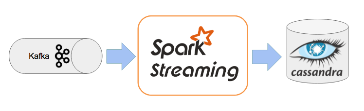
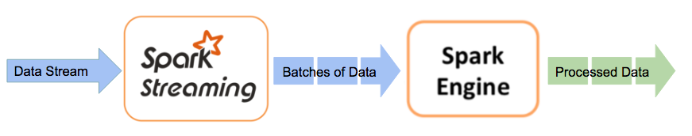
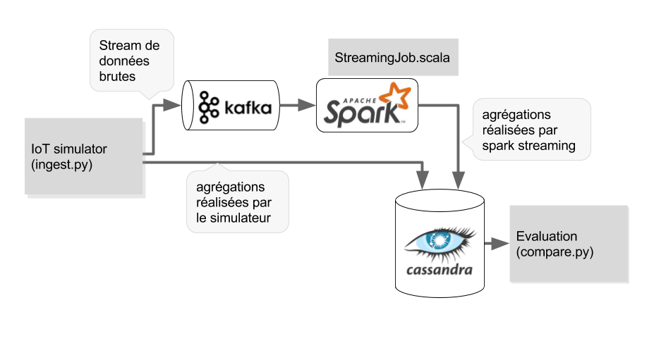

Dans ce blog post, nous allons vous montrer l'étude de Boontadata au travers d'un moteur de traitement: Spark Streaming. Cette extension de l’API Spark permet de mettre en place des processus de traitements répondant à des problématiques de vitesse, tolérance à la panne, scalabilité lorsqu’il s’agit de données provenant d’un flux (ces données peuvent venir de sources diverses telles que Flume, Kafka). 
Concrètement, Spark Streaming reçoit la donnée en stream, qu’il divise ensuite en micro-batches (selon un intervalle de temps défini). Ceux-ci sont ensuite gérés par le moteur Spark qui permet le traitement des données sur une fenêtre de temps. 
L'architecture mise en place repose sur la plateforme générique boontadata constituée des éléments :
Tous les éléments de la plateforme boontada sont créés dans des containers distincts de manière à apporter un maximum de flexibilité.

Le schéma ci-dessus représente le workflow de notre plateforme.
Les données proviennent d’un IOT et sont envoyées dans un broker Kafka. Les données sources sont également aggrégées sur une fenêtre de temps par la simulateur IOT et sauvegardées dans la base Cassandra pour servir de référence.
La brique Kafka sert de source de données à Spark Streaming qui représente le service de traitement à évaluer.
Spark Streaming procède au traitement des données (aggrégation) sur des micro-batches et stocke les résultats dans la base de données cassandra.
Le module de comparaison récupère les résultats dans Cassandra et permet d'évaluer les latences induites par le traitement Spark Streaming.
Afin de connaître la procédure d’installation, n’hésitez pas à aller sur le lien suivant.
L'architecture de boontadata a été conçue de manière à permettre de tester très rapidement, et avec un minimum de changements, différents moteurs de traitement des flux de données. Dans cette optique, seul le container contenant le moteur de traitement à tester et le code correspondant sont à recréer pour tester un nouveau scénario. C'est cette partie que nous allons détailler dans la paragraphe suivant pour la mise en place du scénario spark streaming.
Afin de s'affranchir de tout IDE, la création des jars qui seront exécutés par le moteur de traitement sera réalisée dans un container docker contenant les outils nécessaires à la création de jars java et scala.
La fonction build_and_push du script buildimages.sh permet de créer le jar, l'image docker associée et de pousser cette dernière dans un registry docker.
sbt clean assembly) docker builddocker push Note : toutes les images docker correspondantes aux autres éléments génériques de l'infrastructure boontadata sont également construits à l'aide du script build_and_push.sh
build_and_push $BOONTADATA_HOME/code/pyclientbase
build_and_push $BOONTADATA_HOME/code/pyclient
build_and_push $BOONTADATA_HOME/code/cassandra/base
build_and_push $BOONTADATA_HOME/code/cassandra/init
build_and_push $BOONTADATA_HOME/code/kafka-docker
build_and_push $BOONTADATA_HOME/code/spark/base
build_and_push $BOONTADATA_HOME/code/spark/worker
build_and_push $BOONTADATA_HOME/code/zookeeper
Le réalisation des tests se fait en 2 étapes :
. startscenario.sh spark. runscenario.sh spark1Les containers sont créés via la commande docker compose up
Le fichier docker-compose.yml est constitué de 3 parties qui sont concaténées :
Le script runscenario.sh fait appel à la fonction scenario_spark qui permet de déclencher tout le workflow
L'analyse des résultats permet de comparer les valeurs d'agrégation (sur la fenêtre de temps de 5s) réalisées en début de workflow par le simulateur IOT avec celles calculées par le moteur spark streaming
Exemple de résultats :
Comparing ingest device and downstream for m1_sum
10 exceptions out of 21
Exceptions are:
window_time device_id category m1_sum_ingest_devicetime m1_sum_downstream delta_m1_sum_ingestdevice_downstream
1 2017-01-03 17:52:15 84cbc110-f4d0-4bb1-9530-bff92770c382 cat-1 851 884.0 -33.0
2 2017-01-03 17:52:20 84cbc110-f4d0-4bb1-9530-bff92770c382 cat-1 656 726.0 -70.0
6 2017-01-03 17:52:15 84cbc110-f4d0-4bb1-9530-bff92770c382 cat-2 1137 1156.0 -19.0
7 2017-01-03 17:52:20 84cbc110-f4d0-4bb1-9530-bff92770c382 cat-2 674 709.0 -35.0
9 2017-01-03 17:52:30 84cbc110-f4d0-4bb1-9530-bff92770c382 cat-2 488 536.0 -48.0
13 2017-01-03 17:52:25 84cbc110-f4d0-4bb1-9530-bff92770c382 cat-3 519 618.0 -99.0
15 2017-01-03 17:50:05 84cbc110-f4d0-4bb1-9530-bff92770c382 cat-4 49 NaN NaN
17 2017-01-03 17:52:15 84cbc110-f4d0-4bb1-9530-bff92770c382 cat-4 1062 1149.0 -87.0
18 2017-01-03 17:52:20 84cbc110-f4d0-4bb1-9530-bff92770c382 cat-4 1519 1605.0 -86.0
19 2017-01-03 17:52:25 84cbc110-f4d0-4bb1-9530-bff92770c382 cat-4 940 1071.0 -131.0